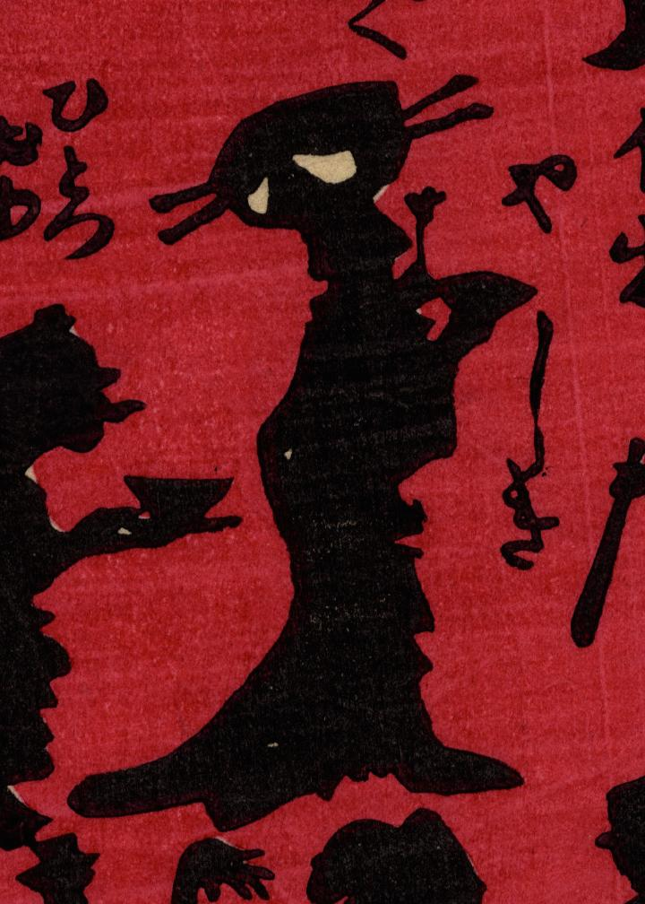

← 图鉴索引

花魁の髪飾りが髑髏となった化物。
著作者：小林英次郎／出典：親書誌：U426_nichibunken_0269：しん板あんどううつしゑ；シンパン アンドウ ウツシエ／日付：2014／資源識別子：U426_nichibunken_0269_0006_0000
Copyright (c)2010- International Research Center for Japanese Studies, Kyoto, Japan. All rights reserved.